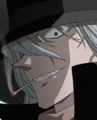
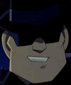
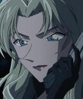
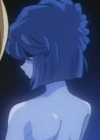
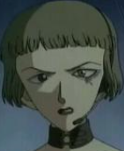
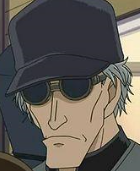
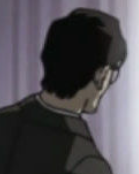
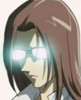

|
琴酒（Gin，ジン）
声优：堀之纪 黑衣组织重要成员，经常伏特加一起出现。是最早登场也是最重要的组织成员之一。银色（早期为金色）长发，左撇子。冷酷残忍，头脑冷静，似乎可以毫不犹豫地杀死任何人。经常执行各种暗杀和清除组织内奸的任务，是给新一灌下APTX4869使其身体变小的罪魁祸首。爱车是黑色的保时捷356A。 |
琴酒  |
|---|---|
| 伏特加（Vodka，ウォッカ）
声优：立木文彦 黑衣组织重要成员，琴酒的搭档，最早登场的组织成员之一。总是带着墨镜。极端残忍但头脑简单，做事稍不细密。完全服从琴酒且一起行动，尊称琴酒为“大哥”。 |
伏特加  |
| 贝尔摩德（Vermouth，ベルモット，又译苦艾酒）
声优：小山茉美 黑衣组织重要成员。真实身份为美国大明星莎朗·温亚德，因某种原因恢复年轻或停止衰老（具体不详），而后对外宣称为“莎朗的女儿”克丽丝·温亚德。精通易容与变声。负责收集重要情报，是个“秘密主义者”。深受“那位先生”的宠爱。在纽约曾被新一和小兰救下，一直保护两人。知道柯南和灰原的真实身份，但却并没有上报组织，原因似乎也与她自身原因有关。 |
贝尔摩德  |
| 雪莉（Sherry，シェリー；已脱离组织）
声优：林原惠美 黑衣组织重要成员。本名宫野志保。组织中的科学家，药物APTX4869的制造者。据琴酒所言是“在组织里算是少数头脑顶尖的人”。但在组织杀害她的姐姐宫野明美后以停止研发以示抗议，被组织囚禁时服下APTX4869自尽，却身体恢复幼年并逃出组织。化名灰原哀，被阿笠博士收留。 |
灰原哀  |
| 基安蒂（Chianti，キアンティ）
声优：井上喜久子 黑衣组织中的狙击手，与科恩搭档，有效射程为600码左右，实力强劲。左眼有凤尾蝶图案纹身并且常画很重的眼影。性格激进，痛恨对卡尔瓦多斯见死不救的贝尔摩德。 |
基安蒂  |
| 科恩（Korn，コルン）
声优：木下浩之 黑衣组织中的狙击手，与基安蒂搭档，狙击能力在600码左右，技术出众。性格冷酷、沉默寡言。参与过多次暗杀行动。同样讨厌贝尔摩德。 |
科恩  |
| 宫野厚司（死亡）
黑衣组织中的科学家，宫野明美、宫野志保的父亲，在科学界以遭驱逐的“疯狂科学家”而闻名。和妻子宫野艾莲娜一起进行“使死者复活的秘密药物”的研究。在志保出生后不久便与妻子一同“意外死亡”。 |
哀殿之父  |
| 宫野艾莲娜（死亡）
声优：铃木弘子 黑衣组织中的科学家，英国人，宫野明美、宫野志保的母亲。和丈夫宫野厚司一起进行药物研究。沉默寡言，被称为“坠入地狱的天使（Hell Angel）”。在志保出生后不久便与丈夫一同“意外死亡”。生前对自己的死亡有所察觉，并且为尚且年幼的女儿志保留下了几盘录音。 |
哀殿之母  |
| 以上的出场人物出去哀殿父母以外都是反面角色，波本，黑麦威士忌（Rye，ライ）（赤井），基尔等人因为是卧底没有列在里面，百度贴吧有详细资料。 “那位先生”没有列在表格里，因为该角色身份未公开。 领域外的妹妹这一角色信息暂时不全。 楠田陆道，沼渊己一郎等作用不大的角色没有写在里面。 哀殿父母的照片基本没有，，丑了点别怪小编。。 |
其他角色 |